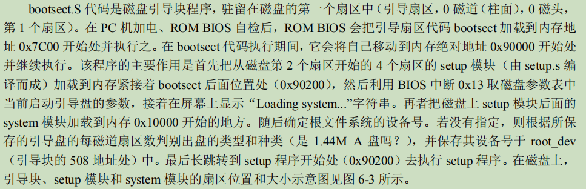

Linux内核体系结构
操作系统内核的结构模式主要可分为整体式的单内核模式和层次式的微内核模式，以及这两
者的混合模式。Linux 0.12 内核采用的是单内核模式。
在单内核模式的系统中，操作系统所提供服务的流程为：应用主程序使用指定的参数值执行系统调
用指令(int x80)，使 CPU 从用户态（User Mode）切换到核心态（Kernel Model），然后操作系统根据具体
的参数值调用特定的系统调用服务程序，而这些服务程序则根据需要再调用底层的一些支持函数以完成
特定的功能。在完成了应用程序所要求的服务后，操作系统又使 CPU 从核心态切换回用户态，从而返回
到应用程序中继续执行后面的指令。
在2.6版本前, Linux系统的进程在内核态运行时不会被调度程序切换。即进程在内核态程序中运行时是不可抢占的
（nonpreemptive）, 但当处于用户态程序中运行时则是可以被抢占的（preemptive）。
Linux 内核主要由 5 个模块构成，它们分别是：进程调度模块、内存管理模块、文件系统模块、进 程间通信模块和网络接口模块。
系统调用
linux os在setup.s中会将用户程序发出的软件中断设置为 INT128（0x80），并称为系统调用（System Call）。系统调用中断是用户程序使用操作系统资源的唯一界面接口。
- 系统调用过程:当应用程序经过库函数向内核发出一个中断调用 int 0x80 时，就开始执行一个系统调用。其中寄存 器 eax 中存放着系统调用号，而携带的参数可依次存放在寄存器 ebx、ecx 和 edx 中。因此 Linux 0.12 内 核中用户程序能够向内核最多直接传递三个参数，当然也可以不带参数。
系统启动
PC 的电源打开后，80x86 结构的CPU 将自动进入实模式，并从地址0xFFFF0开始自动执行程序代码(cs:ip=0xFFFF:0), 这个地址通常是 ROM-BIOS 中的地址。PC 机的 BIOS 将执行系统的某些硬件检测和诊断功能，并在物理地址 0 处开始设置和初始化中断向量。此后，它将磁盘0磁道第一个扇区（磁盘引导扇区，512 字节）读入内存绝对地址 0x7C00 处(cs:ip=0x07c0:0)。 当它被执行时就会把自己移动到内存绝对地址 0x90000（576KB）处，并把启动设备盘中后 2KB 字节代码（boot/setup.S）读入到内存 0x90200 处。而内核的其他部分（system 模块）则被读入到从内存地址 0x10000（64KB）开始处, 后面 setup 程序将会把 system 模块移动到物理内存起始位置处，这样 system 模块中代码的地址也即等于实际的物理地址，便于对内核代码和数据进行操作。
- bootsect.S
 -
setup.S: setup 程序的主要作用是利用 ROM BIOS 的中断程序获取机器的一些基本参数，并保存在 0x90000 开始的内存块中，供后面程序使用。同时把 system 模块往下移动到物理地址 0x00000 开始处，这样，system 中的 head.s 代码就处在 0x00000 开始处了。然后加载描述符表基地址到描述符表寄存器中，为进行 32 位保护模式下的运行作好准备。接下来对中断控制硬件进行重新设置，最后通过设置机器控制寄存器CR0 并跳转到 system 模块的 head.s 代码开始处，使 CPU 进入 32 位保护模式下运行。
-
head.s: head.s 程序在被编译生成目标文件后会与内核其他程序的目标文件一起被链接成 system 模块。
这段程序首先加载各个数据段寄存器，重新设置中断描述符表 IDT，共 256 项，并使各个表项均指向一个只报错误的哑中断子程 序 ignore_int。这个哑中断向量指向一个默认的“ignore_int”处理过程(如果设置的 IDT 少于 256 项，那么在一个要求的中断所指定的描述符项大于设置的最大描述符项时，CPU就会产生一个一般保护出错（异常 13）。另外，如果硬件出现问题而没有把设备的向量放到数据总线上，此时 CPU 通常会从数据总线上读入全 1（0xff）作为向量，因此会去读取 IDT 表中的第 256 项，因此也会造成一般保护出错。);
检查 A20 地址线是否已经打开，测试系统是否含有数学协处理器。然后初始化内存页目录表，为内存的分页管理作好准备工作。最后跳转到 system 模块中的初始化程序 init/main.c 中继续执行。